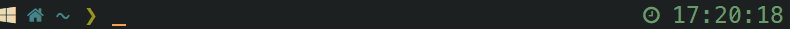
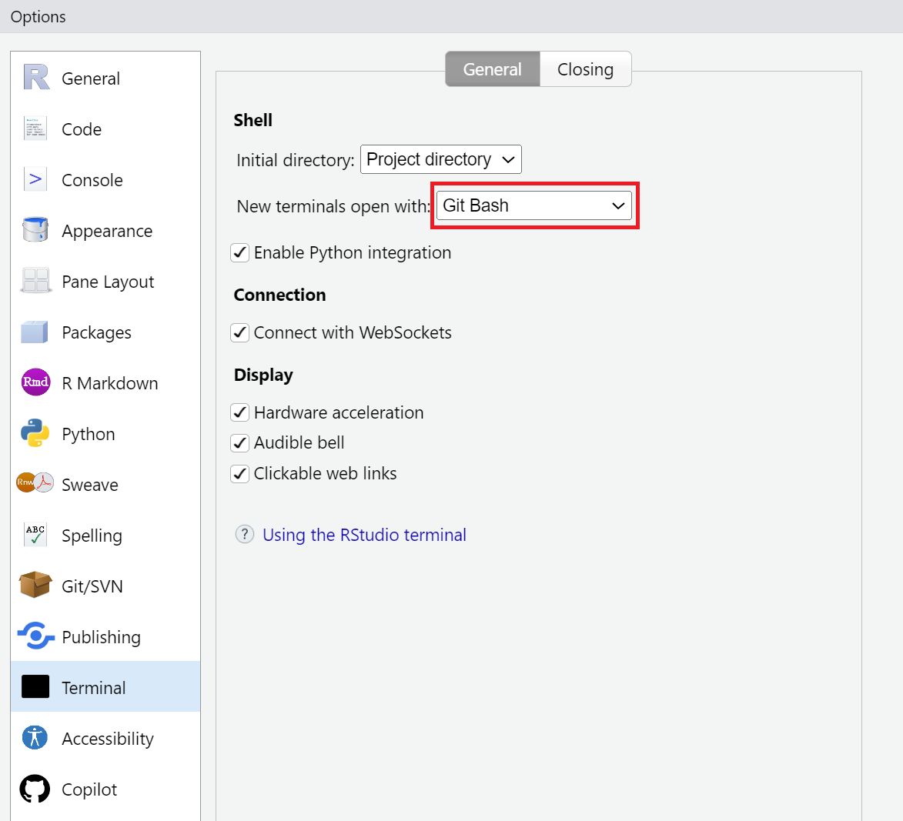

This post only concerns Windows users.
Introduction
When you install git on Windows systems, you can also install the Git Bash software. It’s an interesting solution to run common Linux command lines (git, cd, rm, mkdir, nano, etc.) on Windows environments. Git Bash uses Bash as the default shell, but other shells, more powerful, are available.
In this post we will focus on the Z Shell (or zsh). It inherits Bash’s features and provides some improvements1:
- command suggestion
- command line completion
- file globbing
- syntax highlighting
- spelling correction
- themeable prompts
- and many other plugins
We will also present Oh My Zsh!, an open source, community-driven framework for managing zsh plugins.
Installation
ZSH shell
To install zsh on Git Bash, proceed as follow:
- Visit this page and download the file
zsh-X.X-X-x86_64.pkg.tar.zst. - Install the software PeaZip (required to extract the content of
zstarchives). - Extract the content of
zsh-X.X-X-x86_64.pkg.tar.zstwith PeaZip. - Copy all the files in the folder
C:/Program Files/Git/. - Open Git Bash and run
zsh(pressqto skip the zsh configuration). - Delete the
zsh-X.X-X-x86_64.pkg.tar.zstfile (and extracted files). - Uninstall PeaZip.
Now we will set zsh as the default shell on Git Bash. To do so, we are going to edit/create the configuration file of the bash shell to tell Git Bash to launch zsh at startup.
Open Git Bash, run nano ~/.bashrc and add these lines:
Press CTRL + X, Y, and Return to save and quit this file. Close and reopen Git Bash. zsh is now the default shell.
Oh My Zsh
Oh My Zsh! is a framework for making easier the configuration of zsh and managing zsh plugins. To install Oh My Zsh! run the following command on Git Bash:
The prompt must have changed (-> ~).
N.B. You can ignore the error message (ERROR: this script is obsolete…).
Customization
Color theme
You can change the default color theme of Git Bash by right-clicking on the title bar and by selecting Options.... In the Look menu, you can select a predefined theme (e.g. Gruvbox).
Nerd Fonts
Before changing the zsh prompt, we need to install on Windows a Nerd Font. It’s recommended to use the MesloLG Nerd Font with the Powerlevel10k prompt (the prompt we will install later).
Proceed as follow:
- Download the MesloLG Nerd Font pack at https://www.nerdfonts.com/font-downloads.
- Extract the content of the ZIP file.
- Select all files (except the
README.mdand theLICENSE), right-click and selectInstall.
Then, on Git Bash, right-click on the title bar and select Options.... In the Text menu, click on Select... and choose MesloLGS NF.
Powerlevel10k prompt
We are going to install the Powerlevel10k prompt. To install this prompt with Oh My Zsh!, run this command:
Now we need to activate this prompt in the configuration file of zsh (named ~/.zshrc). Let’s open this file with nano ~/.zshrc.
Replace the line ZSH_THEME="robbyrussell" by:
Press CTRL + X, Y, and Return to save and quit this file.
Finally, run source ~/.zshrc to update the configuration of zsh. This will launch the Powerlevel10k configuration wizard. Answer the questions as you wish to customize the prompt.
Congrats! Your prompt should look like this one:

You can install a different prompt (theme) if you want. Oh My Zsh! provides a lot of different themes.
ZSH plugins
Oh My Zsh! comes bundled with many plugins that add new features to zsh shell. By default, the git plugin is enabled. It provides git aliases (shortcuts).
z plugin
Let’s add a new functionality by enabling the z plugin. This plugin defines the z command that tracks your most visited directories and allows you to access them with very few keystrokes.
To activate this plugin, we need to modify a line in the configuration file of zsh. Let’s open this file with nano ~/.zshrc.
Replace the line plugins=(...) by:
Press CTRL + X, Y, and Return to save and quit this file.
Finally, run source ~/.zshrc to update the configuration of zsh.
You can use the same method to activate other plugins bundled with Oh My Zsh!
To use the z command, you must first visit the directory with the Linux command cd. After a while, you will be able to access this directory by simply writing z followed by a pattern specific to this directory.
For example, if you visit the folder C:/Users/Username/Document/Projects a couple of times, you will able to write z proj. After pressing the TAB key, the command line will be replaced by: z C:/Users/Username/Document/Projects. Press Return and this will have the same effect as running cd C:/Users/Username/Document/Projects.
Autosuggestions plugin
The zsh-autosuggestions plugin is a fast autosuggestions tool for zsh. It suggests commands as you type based on history and completions.
This plugin is not bundled with Oh My Zsh! but we can install it with git:
To activate this plugin, we need to modify the configuration file of zsh. Let’s open this file with nano ~/.zshrc.
Replace the line plugins=(...) by:
Press CTRL + X, Y, and Return to save and quit this file.
Finally, run source ~/.zshrc to update the configuration of zsh.
To use this feature, start typing a command (for example cd) and you will see a completion offered after the cursor in a muted gray color. Press TAB to accept the suggestion or use the Up and Down arrow keys to navigate into the history associated with this command.
Syntax highlighting plugin
The zsh-syntax-highlighting plugin is a tool that enables highlighting of commands as they are typed. Valid commands, errors, strings, and URL will be highlighted by a specific color.
This plugin is not bundled with Oh My Zsh! but we can install it with git:
To activate this plugin, we need to modify the configuration file of zsh. Let’s open this file with nano ~/.zshrc.
Replace the line plugins=(...) by:
Press CTRL + X, Y, and Return to save and quit this file.
Finally, run source ~/.zshrc to update the configuration of zsh.
Aliases
You can improve your productivity by creating aliases (shortcuts). Note that this feature is available in many shells.
For example, we can create this alias:
Then, instead of writing cd .., we can simply type .. to navigate to the parent directory.
We can store aliases in the configuration file of zsh. Let’s open this file with nano ~/.zshrc and add at the end of the file a subjective selection of aliases:
Press CTRL + X, Y, and Return to save and quit this file. Run source ~/.zshrc to update the configuration of zsh.
Of course, you can add your own aliases. The hardest part is remembering!
You can benefit of all these features in RStudio IDE by changing the default terminal application. Go to Tools, Global Options and Terminal. Select Git Bash in New terminals open with.
